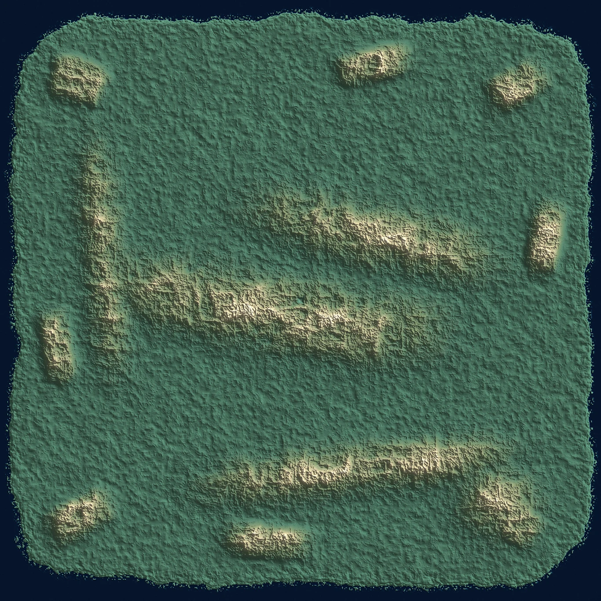

Quake 2026
Q26
A Quake III–derived engine project exploring native-scale terrain, map authoring and several loaded worlds on one server.
R8 terrain relief from the authored heightfield. The ocean, ranges and low passes use the same scale.
What the tests covered
| Run | Observed result |
|---|---|
| R8 terrain | One BSP world measured 4,194,304 × 4,194,304 map units. At 32 units per metre that is 131.072 × 131.072 km, with scale 1. The OpenGL run passed 27 selected collision and water probes. |
| R8 compiler | BSP, visibility and lighting completed. The BSP pass took 314.3 seconds on the test machine. The large run recorded 1,419 warnings about intermediate node padding. The emitted leaf bounds passed ordering and containment checks. |
| 48-unit lanes, loopback | 699 paired rounds and 16,760 isolation samples passed on one host during the eight-hour test. The run recorded zero telefrags and zero flood drops. |
| 48-unit lanes, physical LAN | Three paired rounds and 56 isolation samples passed across two machines, with 28 and 27 transitions by the two clients. The run recorded zero telefrags and zero flood drops. |
Still under test. Internet multiplayer and continuous terrain coverage need their own runs. The terrain recording used fixed-step capture, so the result gives no real-time frame-rate measurement.
Several maps on one server
Q26’s subworld setting loads an additional BSP at a specified offset. A normal map rotation changes the active BSP between rounds. These are two separate ways to use the same maps.
Relay Rooms has sample configurations for both. The subworld example places the annex 4,096 units along X and loads its static geometry. The portal pads in Relay Hall stay inside the hall.
Example offset
set sv_subworld1 "q26_relay_annex 4096 0 0"
set sv_subworldEntities 0
map q26_relay_hallUse a Q26 build that supports immutable subworlds. The 4,096-unit offset belongs to this sample. The separate 48-unit result describes the revised lanes used in the multi-client tests.
Original map sample
Relay Rooms
Start in Relay Hall, walk onto a coloured pad, and look for the corresponding landing point in the opposite bay. Relay Annex is a smaller room for comparing map changes and layouts.
Installation guide and test scope · SHA-256 checksums · Build results
- Use a compatible Quake III–based client and your own game data. Place the PK3 in a test profile’s game directory.
- Open the game console and enter
/map q26_relay_hall. Use/map q26_relay_annexfor the second room. - Open the source ZIP for the map sources, textures, shaders, configuration files and compiler instructions.
Both maps passed BSP, visibility and lighting compilation, with zero reported diagnostics in those six passes. The build checks verified the compiled teleport targets and shader names. A dedicated server ran the map rotation and loaded the static annex at the specified offset. The Windows OpenGL client also loaded the exact release PK3 and walked both coloured pads. Cyan landed in the east bay and amber in the west bay.